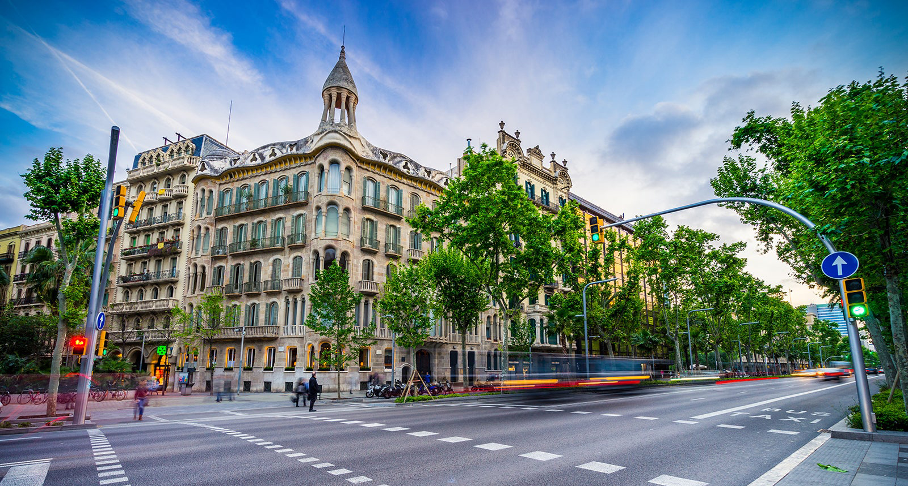

Presentación


Nacido en Curitiba (Paraná, Brasil), estudiante, cursando el 1° año de escuela secundaria, músico, estudiando ciencia de la computación en la Universidad de Harvard (CS50), habiendo realizado cursos de desarrollo web, teniendo mucho interés en las ciencias exactas, especialmente en las área de matemáticas.
Más información en las páginas al lado.